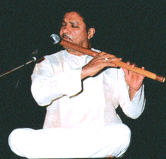

Pandit Hariprasad Chaurasia
Hari Prasad, or "Blessings of the Lord", an appropriate name indeed. Hari Prasad Chaurasia's God gifted talent and his consummate artistry has distinguished him as the greatest living master of the North Indian flute today.
The simple bamboo flute transformed by the late Pannalal Ghosh into an important instrument for interpreting the finer nuances of Indian classical music has indeed found a guardian angel in Pandit Hariprasad Chaurasia. Hariji, as his admireres call him, has not only nurtured Panna Babu's legacy but with his natural talent for music and diligent practice combined with his highly innovative approach has made the flute almost indispensable for a concert of Indian classical music, anywhere in the world.
Unlike many other great musicians of India, Pandit Hariprasad Chaurasia was not born in a family of musicians. In fact, his father, a noted wrestler, was bent upon making his son famous as a grappler. But young Hariji chose the path of music instead and began his musical odyssey at the age of 15, by learning the techniques of vocal classical music from Pandit Raja Ram of Benares. Later, a chance listening to a flute recital by Pandit Bholanath had such a profound impression on him that he switched to learning the art of flute playing from the Master.
While still in his teens, Hariji had achieved enough proficiency in the art of flute playing to join All India Radio, Cuttack as a performing artist. After a tenure of 5 years at Cuttack he was transfered to All India Radio, Bombay. It was here that he entered the most significant phase of his career under the guidance of the Sur Bahar virtuoso Shrimati Annapurna Devi, the illustrious daughter of the all time great teacher and musician, Ustaad Allauddin Khan of the Maihar school of music. Her influence not only gave his music new depth and dimension but also inspired him to pursue a new, unrestraned performing career.
Hari Prasad Chaurasia's appearance on the concert platform brought him instant acclaim all over India which was soon followed by invitations from music festivals in Iran, Europe and the USA, where he reaped a rich harvest of rewards.
Back home in 1984, he was given the National Award of the Sangeet Natak Academy in recognition of his outstanding contributions to music and later in 1990 he won the Maharashtra Gaurav Puraskar.
Source : http://fbox.vt.edu:10021/org/malhaar/GM/Hariprasad.html
[Unrecovered image: http://jupiter.beseen.com/hit.counter?fon]
times since January 23, 1998.
![[IMAGE]](../../gifs/lg4.gif)
Jump back to Home Page...
![[IMAGE]](../../gifs/tig1.jpg)